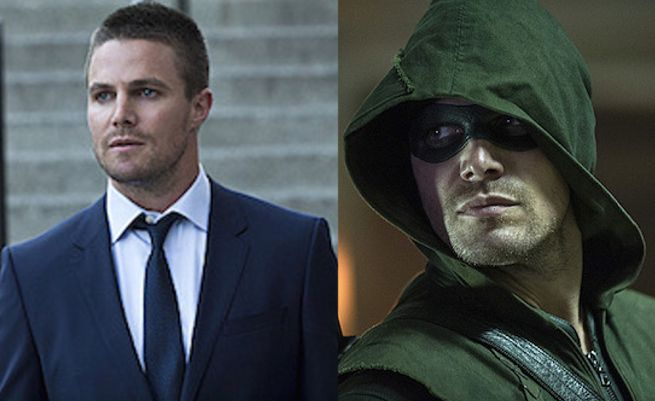

Oliver Queen/The Arrow
Oliver Queen is a billionaire playboy turned vigilante archer. Five years before Oliver became the vigilante Arrow. He was stranded on a deserted island in the Northern China sea. He was lost and presumed dead for five years before he was discovered and brought back to Starling City. When he first came back, he was able to use his family's wealth to fund his vigilante cause. He used an old Queen Consolidated metal factory and turned it into a night club. The basement of his night club he used as his "Arrow Cave". In his first year back he stopped his best friend's father from destroying the city. After his best friend died in the earthquake, Oliver vowed never to kill again. In his second year back the police who were chasing him the year before started to help him out a little. Renaming Oliver from "The Hood" to "The Arrow". At the end of the year Slade Wilson/Deathstroke launched and assult on Starling City. Oliver was only able to beat him with the help of his friends. At the end of his third year Oliver was offered to become the next Ra's al Ghul. Oliver had a plan to kill himself and Ra's by sabotaging the plane. Ra's was planning on releasing a bio-weapon on the city. Oliver's plan failed and he had an epic showdown with Ra's stabbing Ra's through the heart with the same blade Ra's used to kill Oliver half a year earlier. Now Oliver has quit the vigilante life and has moved somewhere far away with Felicity Smoak.